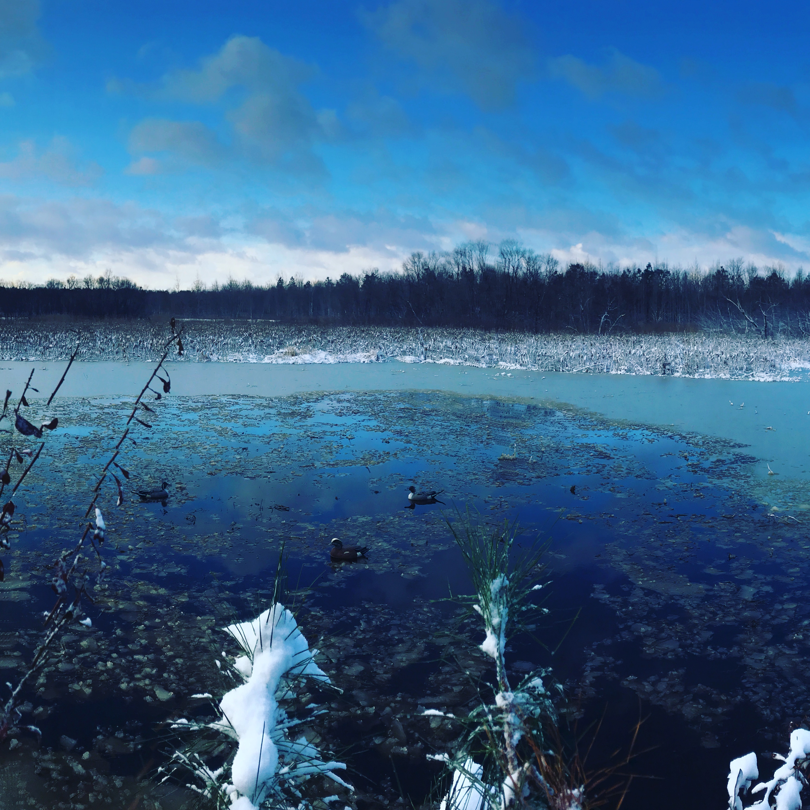
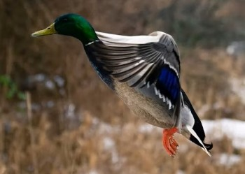
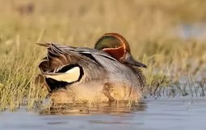
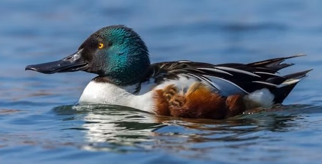
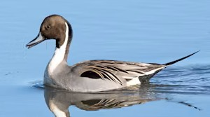
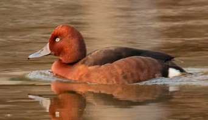
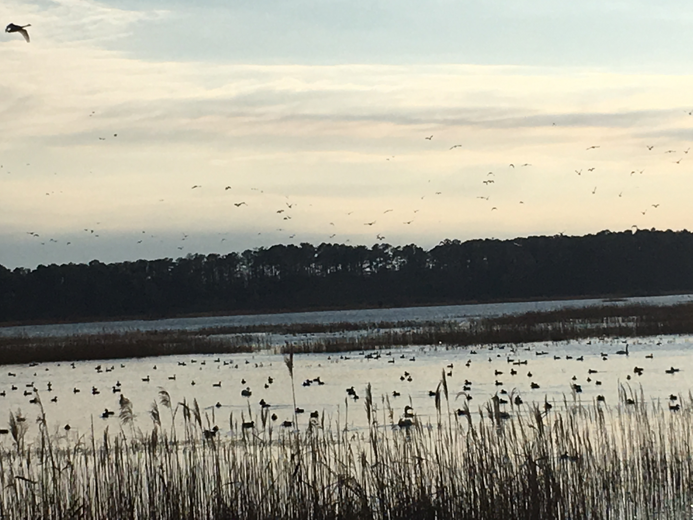

Conservation
At Big Duck Outfitters, conservation is at the heart of who we are — because great hunts come from great habitats.
| Photo | Species | 2025 | 2024 | % Change | % from LTA |
|---|---|---|---|---|---|
 |
Mallard | 6.5 | 6.6 | -1% | -17% |
 |
Green-winged Teal | 2.5 | 3.0 | -15% | +16% |
 |
Northern Shoveler | 2.7 | 2.6 | +4% | +4% |
 |
Northern Pintail | 2.2 | 1.9 | +13% | -41% |
 |
Redhead | 0.9 | 0.7 | +17% | +25% |
About This Table: Numbers in millions. LTA=Long Term Average. This table tracks five important waterfowl species using annual survey data. The data is used to determine limits on species that hunters can hunt annually. Data is derived from research often funded by hunters.

Healthy wetlands are essential for sustaining waterfowl populations. Hunting licences, duck stamps, fines/penalties, and organizations contribute to waterfowl conservation. Restoration projects, responsible hunting practices, and long‑term habitat management help ensure that species like mallards, teal, shovelers, pintails, and redheads continue to thrive. By monitoring survey data and understanding how environmental changes affect migration and breeding, hunters and conservation groups can work together to protect these ecosystems for future generations. Hunting brings awareness and purpose to waterfowl conservation research that ultimately could not exist.